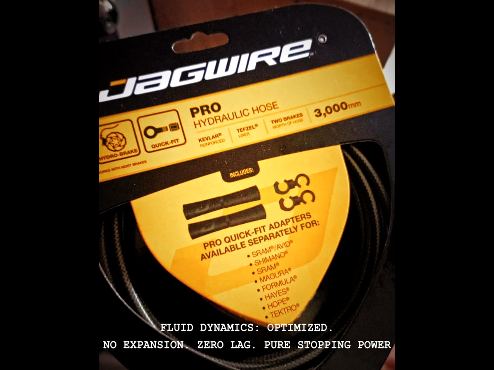

Hydraulic Braking Systems at Altitude

At 3,000 meters above sea level, your lungs aren't the first to fail. Neither are your legs. It's your brakes.
Atmospheric pressure drops. Hydraulic systems—human or mechanical—enter stress. Hoses expand. Compounds fatigue. Dead volume multiplies. Hysteresis appears.
This is where engineering stops being marketing and becomes survival.
MODULE_01 // ATMOSPHERIC_PRESSURE
Earth's atmosphere is not uniform. As you ascend, the column of air above you decreases, and with it the pressure exerted on every closed or semi-open system.
Where:
- \(P_0\) = Sea level pressure (101.325 kPa)
- \(M\) = Molar mass of air (0.029 kg/mol)
- \(g\) = Gravitational acceleration (9.81 m/s²)
- \(h\) = Altitude (meters)
- \(R\) = Universal gas constant (8.314 J/(mol·K))
- \(T\) = Absolute temperature (K)
| Altitude (m) | Pressure (kPa) | Relative density | Loss vs sea level |
|---|---|---|---|
| 0 | 101.33 | 1.000 | — |
| 3,000 | 70.12 | 0.742 | -30.8% |
| 4,000 | 61.66 | 0.668 | -39.1% |
| 5,000 | 54.05 | 0.601 | -46.7% |
This drop doesn't directly affect internal hydraulic pressure—the circuit is closed—but it does modify three critical variables that most workshops ignore:
- DOT fluid boiling point
- Convective air cooling capacity
- Elastomeric seal behavior under trans-mural pressure gradients
MODULE_02 // BOILING_POINT
DOT 4—standard in MTB systems—has a "dry" boiling point of 230°C at sea level. But that value isn't constant. It depends directly on atmospheric pressure.
At 4,000 meters, pressure is 0.61 atm. Applying Clausius-Clapeyron with the latent heat of vaporization of glycol (ΔH ≈ 50 kJ/mol), the boiling point drops to approximately 195°C.
| Altitude | Pressure (atm) | DOT 4 boiling point | Thermal margin lost |
|---|---|---|---|
| 0 m | 1.00 | 230°C | — |
| 3,000 m | 0.69 | 205°C | -25°C |
| 4,000 m | 0.61 | 195°C | -35°C |
| 5,000 m | 0.53 | 185°C | -45°C |
TECHNICAL WARNING:
On a prolonged mountain descent, rotors easily reach 300-400°C. Heat transfers to the fluid through the caliper. At 4,000 meters, with only a 195°C margin, the risk of local boiling—and consequent vapor lock—multiplies.
This isn't theory. It's basic thermodynamics that translates to levers going to the grip without braking.
MODULE_03 // VOLUMETRIC_COMPLIANCE

Hydraulic hoses are not rigid tubes. They're viscoelastic structures that expand under internal pressure. That expansion—called volumetric compliance—steals volume from the system.
In a standard reinforced Nylon hose (like most OEM), compliance can be in the range of 0.15-0.25 ml/bar. Doesn't sound like much. But under braking pressures of 60-80 bar, that means 9-20 ml of lost volume in hose expansion.
That volume doesn't reach the piston. It stays inflating the hose.
Jagwire Pro-Hydro hoses use a PTFE (Teflon) core reinforced with Kevlar fiber. Kevlar's elastic modulus is approximately 3 times higher than Nylon. Result: 30% reduction in volumetric compliance.
| Hose type | Reinforcement material | Relative expansion | Lost volume at 70 bar |
|---|---|---|---|
| Standard OEM | Braided Nylon | 1.0x (baseline) | ~15 ml |
| Jagwire Pro-Hydro | Kevlar + PTFE | 0.7x | ~10 ml |
| Gain | — | -30% | 5 ml recovered |
That 5 ml difference is the line between a brake that bites and one that feels spongy halfway through a switchback at 4,500 meters.
MODULE_04 // CALIPER_RIGIDITY
A split caliper—the traditional two-piece bolted design—experiences microflexion under load. That flexion is elastic, reversible, but steals pressure from the system the same way hose compliance does.
Deflection is calculated with the cantilever beam equation:
| Material | Young's modulus (GPa) | Relative deflection | Application |
|---|---|---|---|
| Aluminum 7075-T6 | 71.7 | 1.0x | Standard split calipers |
| Forged aluminum monoblock | 71.7 | 0.6x | Magura MT7 (optimized geometry) |
| Carbon composite | ~140 | 0.5x | High-end master cylinders |
Magura's monoblock design eliminates the bolted joint. No deforming gasket. No yielding interface. The entire structure acts as a single element, reducing deflection by approximately 40% compared to a split caliper of equivalent geometry.
This isn't magic. It's basic structural geometry applied correctly.
MODULE_05 // CONVECTIVE_COOLING
At 5,000 meters, air density is 40% lower than at sea level. Convective cooling—which depends directly on fluid density—drops proportionally.
Rotors and calipers generate the same frictional heat. But they dissipate less. The result is faster thermal accumulation, especially on prolonged descents where there's no cooling time between braking events.
Combined with the reduced DOT 4 boiling point, this creates a dangerously narrow operational window.
FIELD DATA:
In Colca Canyon (4,160 m), we've seen OEM systems reach complete fade in less than 15 minutes of continuous descent. The same system at sea level would handle 45 minutes without issues.
CONCLUSIONS // APPLIED_ENGINEERING
The hydraulic braking system is not an isolated component. It's a thermodynamic assembly that responds to atmospheric pressure, temperature, materials, and geometry.
That's why we use:
Magura MT7 monoblock: Elimination of deflection through unified structural design. Forged 7075-T6 aluminum with geometry optimized for maximum rigidity.
Jagwire Pro-Hydro: 30% reduction in volumetric compliance through Kevlar reinforcement and PTFE core. Zero parasitic expansion.
DOT 5.1: Dry boiling point of 260°C (vs 230°C for DOT 4). At 4,000 meters, this means 225°C instead of 195°C. Critical thermal margin.
What you apply at the lever is exactly what reaches the rotor. No delay. No deviation. No margin for error.
This isn't an upgrade. It's engineering applied to survival at altitude.